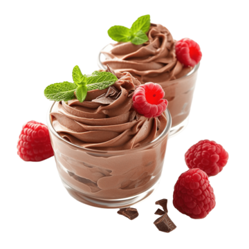

MY FAV RECIPE

Chocolate Avocado Mousse
A healthy and creamy chocolate dessert made with natural ingredients.
Ingredients:
- 2 ripe avocados
- 1/4 cup cocoa powder
- 1/4 cup maple syrup (or honey)
- 1/2 teaspoon vanilla extract
- A pinch of salt
- 2-3 tablespoons almond milk (if needed for texture)
Instructions:
- Blend all ingredients in a food processor until smooth and creamy.
- Taste and adjust sweetness if needed.
- Chill in the fridge for 30 minutes before serving.
- Serve with fresh berries or coconut flakes on top.